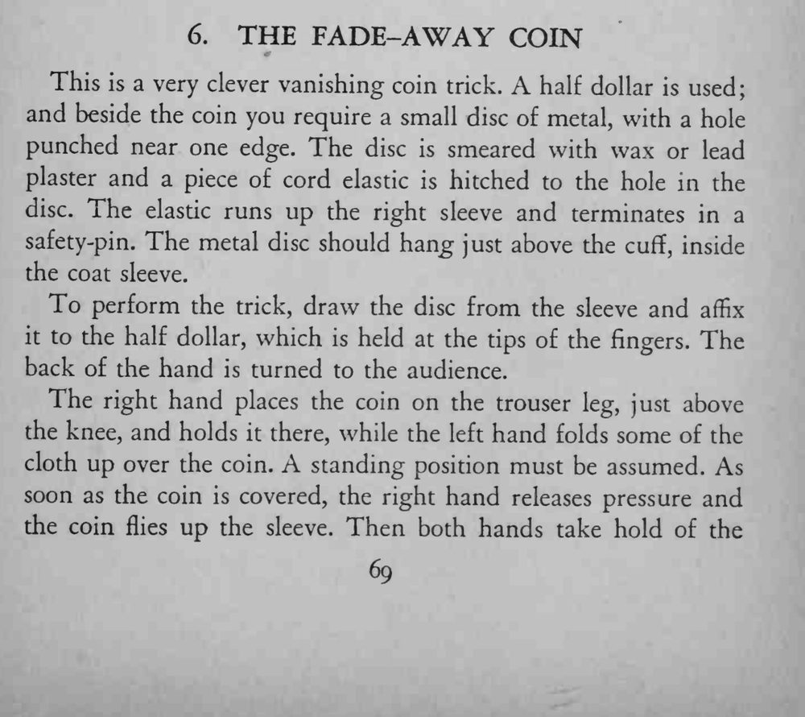
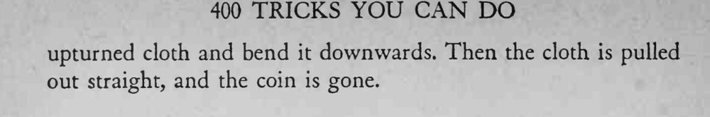

硬币按在膝盖上方的裤腿上，用布一盖，再把布拉直，硬币竟然凭空消失了。
松紧绳的弹力要够；盖布与松手必须在同一瞬间完成。


This is a very clever vanishing coin trick. A half dollar is used; and beside the coin you require a small disc of metal, with a hole punched near one edge. The disc is smeared with wax or lead plaster and a piece of cord elastic is hitched to the hole in the disc. The elastic runs up the right sleeve and terminates in a safety-pin. The metal disc should hang just above the cuff, inside the coat sleeve. To perform the trick, draw the disc from the sleeve and affix it to the half dollar, which is held at the tips of the fingers. The back of the hand is turned to the audience. The right hand places the coin on the trouser leg, just above the knee, and holds it there, while the left hand folds some of the cloth up over the coin. A standing position must be assumed. As soon as the coin is covered, the right hand releases pressure and the coin flies up the sleeve. Then both hands take hold of the upturned cloth and bend it downwards. Then the cloth is pulled out straight, and the coin is gone.